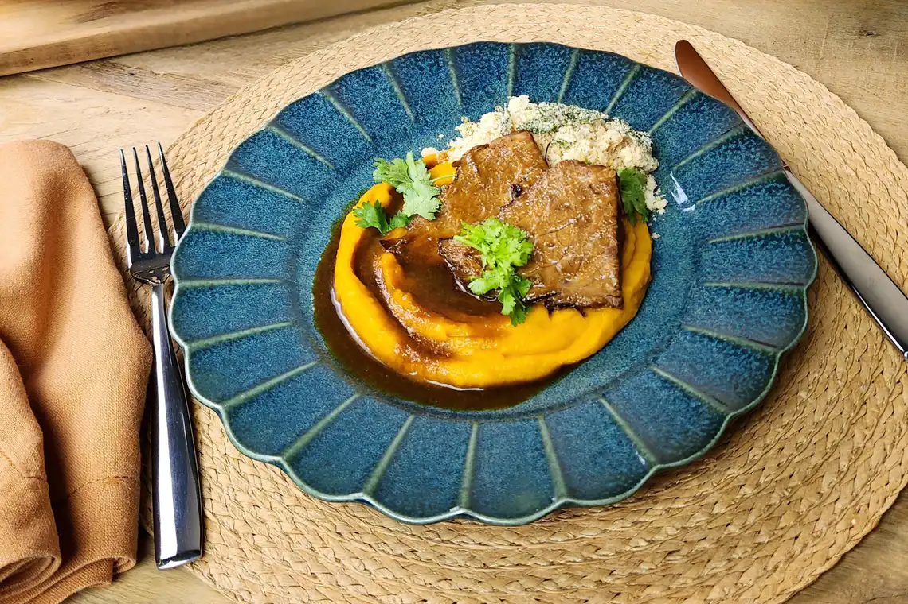

Cupim na pressão com purê de abóbora

Essa combinação prova que comida de verdade pode ser simples, mas nunca sem graça. O cupim é cozido na pressão
e vai à mesa com um molho suculento, que se forma na própria panela. Acompanhado de um purê de abóbora cremoso
e levemente adocicado, o prato é de arrancar suspiros — e elogios.
Ingredientes
1 peça de cupim (cerca de 1 kg)
1 cebola
3 dentes de alho
¼ de xícara (chá) de extrato de tomate
3 colheres (sopa) de molho inglês
2 colheres (sopa) de açúcar mascavo
½ xícara (chá) de vinho tinto
2 xícaras (chá) de água
1 colher (sopa) de azeite
1 colher (sopa) de sal
3 folhas de louro
2 ramos de tomilho
Modo de preparo
- Retire o cupim da geladeira 20 minutos antes do preparo — a carne não deve estar gelada na hora de dourar. Enquanto isso, prepare os demais ingredientes.
- Descasque e corte a cebola em meias-luas finas. Descasque e pique fino o alho.
- Se a peça de cupim estiver com uma capa muito espessa de gordura, corte e descarte o excesso. Tempere a carne com o sal, espalhando com as mãos para cobrir toda a superfície.
- Leve a panela de pressão (sem a tampa) ao fogo alto. Quando aquecer, regue com o azeite e doure o cupim por cerca de 4 minutos de cada lado, inclusive a ponta.
- Transfira a carne dourada para uma travessa e mantenha a panela em fogo médio. Adicione a cebola, tempere com uma pitada de sal e refogue por cerca de 2 minutos, até murchar — não é necessário adicionar mais azeite, pois a cebola vai refogar na gordura da carne. Junte o alho, o louro e o tomilho, e mexa por 1 minuto para perfumar. Acrescente o extrato de tomate e misture bem.
- Regue com o molho inglês e o vinho e raspe o fundo da panela com uma espátula para dissolver os queimadinhos — eles ajudam a dar mais sabor ao molho. Adicione a água e misture o açúcar mascavo.
- Volte o cupim para a panela, tampe e aumente o fogo. Assim que a panela começar a apitar, abaixe o fogo e deixe cozinhar por 50 minutos. Enquanto isso, prepare o purê de abóbora.
- Após esse tempo, desligue o fogo e espere a panela liberar toda a pressão antes de abrir a tampa. Transfira o cupim para um refratário e, sobre uma tigela, coe o caldo com uma peneira, pressionando com uma colher para extrair todo o líquido.
- Deixe o caldo descansar por cerca de 5 minutos para a gordura subir à superfície. Com um concha, retire o excesso de gordura e volte o líquido para a panela. Cozinhe em fogo alto, sem a tampa, por cerca de 10 minutos, até reduzir e formar um molho mais espesso e brilhante.
- Corte o cupim em fatias finas de aproximadamente 1 cm de espessura. Regue com o molho e sirva a seguir com o purê de abóbora.
Siga o NutriChef

Política de Privacidade Termos de Uso
Editora Garetti LTDA. © 2025